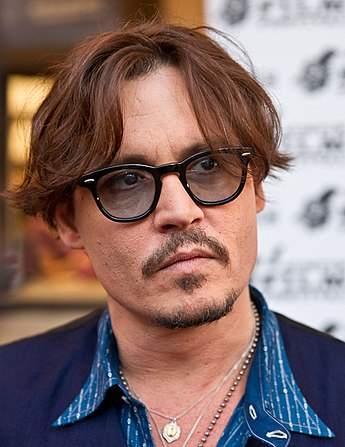
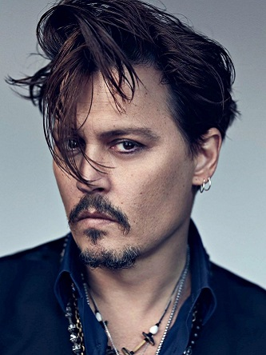

Джон Крістофер (Джонні) Депп ІІ (англ. John Christopher "Johnny" Depp II, нар. 9 червня, 1963, Овенсборо, Кентукі) — американський актор, продюсер, режисер, сценарист, музикант. В 2015 році разом із Елісом Купером та Джої Перрі Джонні Депп утворив музичний супергурт під назвою «Hollywood Vampires». Дебютний альбом гурту вийшов 11 вересня 2015 року.
Біографія
Народився 9 червня 1963 року в невеликому американському містечку Овенсборо. Його батько, Джон Крістофер Депп Старший, працював інженером-будівельником, а його мати, Бетті Сью Палмер — офіціанткою. У нього дві сестри — Деббі і Крісті й брат Деніел. Коли Джонні виповнилося 7 років, його родина переїхала до Флориди, де його батько зайняв кращу посаду в приморському місті. Дитинство провів з дідусем, тому важко пережив його смерть. На дитячу психіку негативний відбиток наклала постійна зміна осель, переїзди. Джонні неохоче відвідував школу. У 12 років почав палити та вживати алкоголь. Після розлучення батьків у 15 років — наркотики. Та, на щастя, підліток знайшов собі інше захоплення — музику. Мати подарувала йому електрогітару, з 12 років Депп почав грати в групі в гаражі. Перший гурт було названо на честь подруги Джонні — Мередіт. Через рік після розлучення батьків Джонні кинув школу, щоб стати рок-музикантом. Отримав перші гонорари за виступи в місцевих барах і клубах. Однак справи у гурту йшли не найкращим чином, тому він припинив своє існування ще до того, як став популярним. Потім був гурт «The Kids» («Дітки»), який локально був досить успішним; «The Kids» переїхали в Лос-Анджелес, змінили назву на «Six Gun Method» і розпались. Депп згодом співпрацював з групою Rock City Angels і був співавтором їх пісні «Марія», яка з'явилася на Rock City Angels — дебют Geffen Records під назвою «Young Man's Blues» («Блюз молодої людини»). Приблизно в цей час Джонні одружився з Лорою Еллісон (шлюб проіснував близько двох років), яка познайомила його із Ніколасом Кейджем. Джонні одержав першу невелику роль у фільмі «Кошмар на вулиці В'язів». Перші гонорари Депп витрачав на уроки акторської майстерності. Незабаром Депп знявся у серіалі «21 Jump Street». Серіал став хітом, а Депп — улюбленцем публіки.
Кар'єра
Після серіалу «21 Jump Street» кінокар'єра актора складалася більш вдало. Наприкінці 90-х Депп вразив усіх своїм перевтіленням у стрічці «Страх і ненависть у Лас-Вегасі», потім у трилері «Дев'ята брама».
Нагороди
| Рік | Назва нагороди | Назва фільма |
|---|---|---|
| 2011 | Золотий глобус | Аліса в країні чудес |
| 2007 | Золотий глобус | Пірати Карибського моря: Скриня мерця |
| 2008 | Оскар | Суінні Тодд: демон-перукар із Фліт-стріт |
| 2006 | Золотий глобус | Чарлі та шоколадна фабрика |
| 2005 | BAFTA - премія Британської Академії Кіно | Чарівна країна |
| 2005 | Оскар | Чарівна країна |
| 2004 | Оскар | Пірати Карибського Моря: Прокляття Чорної перлини |
| 2004 | BAFTA - премія Британської Академії Кіно | Пірати Карибського Моря: Прокляття Чорної перлини |
| 1997 | Каннський фестивал | Хоробрий |
| 1995 | Золотий глобус | Едвард Руки-Ножиці |
Особисте життя
У 1998 році Депп почав зустрічатися з Ванессою Параді. У них народилися двоє дітей — дочка Лілі-Роуз Мелоді (травень 1999) і син Джон Крістофер (Джек) Депп III (квітень 2002). 19 червня 2012 року публіцист Деппа зробила заяву, що Депп і Параді розлучилися. Пізніше Депп та Параді підтвердили розрив, назвавши його добровільним, і заявили, що залишилися друзями.
лютого 2015 року Депп і Ембер Герд одружилися, але вже 22 травня наступного року Ембер подала на розлучення. 13 січня 2017 р. Суд Лос-Анджелеса дав згоду на розлучення знаменитої голлівудської пари. Депп був зобов'язаний виплатити Герд $7 млн до 1 листопада 2018 р. Герд залишила собі двох собак, коня, а також Range Rover 2015 року та Ford Mustang 1968 року. Деппу залишилася вся його власність, включно з нерухомістю по всьому світу.
У липні 2020 року Джонні Депп зізнався на судовому процесі, що постачав марихуану своїй дочці Лілі-Роуз, тоді 13-річній дівчинці, та давав поради щодо вживання «травички» на вечірках. За словами актора, так він «піклувався про безпеку дочки», воліючи, аби вона не спробувала наркотики деінде поза домом. Зізнання відбулося на судовому процесі, в якому брали участь Депп та його колишня дружина Ембер Герд: у показаннях обох містилося багато брудних подробиць їхнього особистого життя, скандалів, бійок, подружніх зрад, влаштування неприємних «сюрпризів» тощо. 30 травня 2022 року Депп виграв суд у колишньої дружини. Присяжні ухвалили рішення про виплату актору $10 млн компенсації та $5 млн штрафу за рахунок Герд. Колишня дружина Деппа має отримати 2 млн доларів компенсації. На суді адвокати сторін вимагали відшкодування збитків у розмірі 50 млн та 100 млн доларів відповідно.
Цікаві факти
- За роль Джека Горобця в четвертій частині «Пірати Карибського моря» Джонні Депп отримав 55,6 мільйона доларів — це рекордний гонорар в історії Голівуду.
- За словами самого актора — він не дивиться фільмів зі своєю участю, кажучи так: «Краще я проковтну мішок кліщів, аніж буду робити це». Про ймовірність перегляду власного фільму в майбутньому актор каже: «Ймовірно, мені знадобиться не одна пляшка вина, аби я зміг зробити це».
- Підтримав Революційні події в Україні (28 січня 2014). 16 листопада 2016 року виступив у рамках акції «Voice Project» з вимогою звільнити українського політв'язня у Росії Олега Сенцова.
- Джонні Депп погано бачить лівим оком і короткозорий на праве.
Більше інформації за посиланням